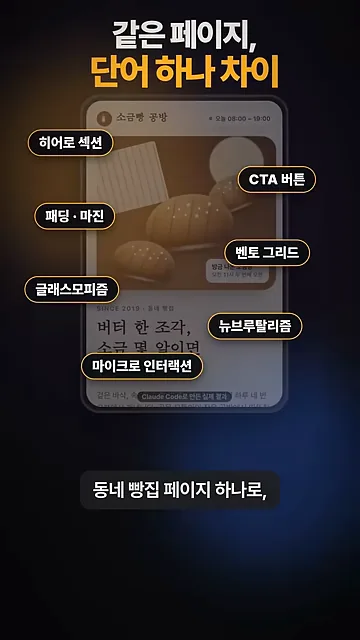
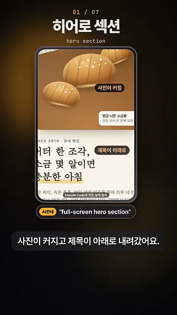
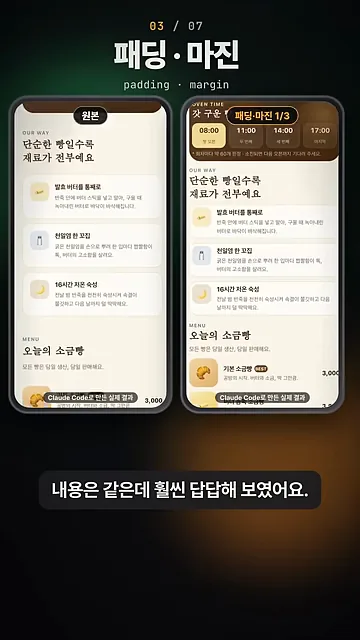
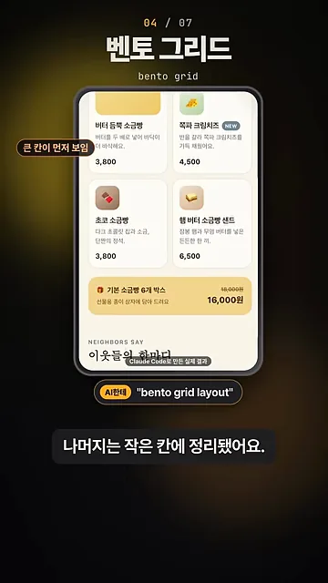
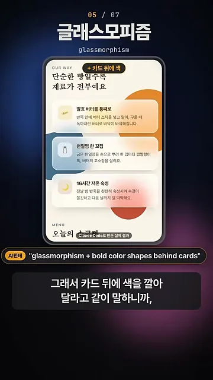
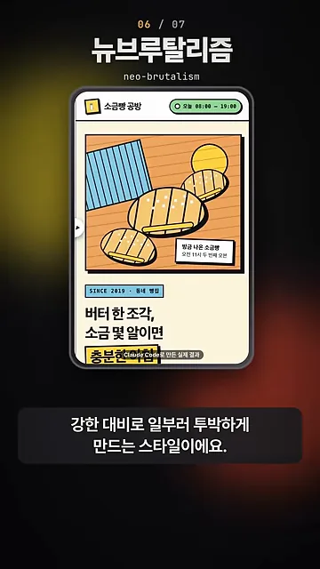
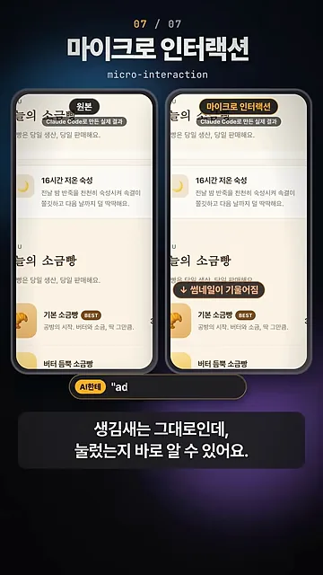
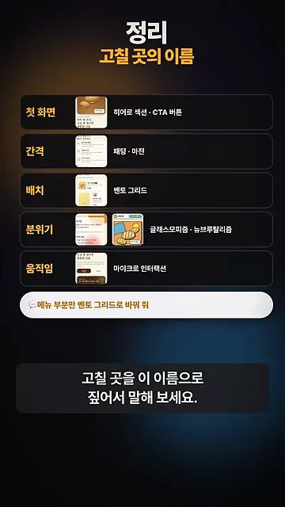

첫 화면: 히어로 섹션과 CTA 버튼
AI한테 웹페이지를 맡기면 첫 결과물은 대체로 그럴듯해요. 문제는 고칠 때예요. '좀 더 예쁘게 해 줘'라고만 하면 AI는 어디를 손대야 할지 몰라서 엉뚱한 곳을 바꾸거나 전체를 흔들어요. 고칠 곳을 디자인 용어로 짚어 주면 그 부분만 바뀌어요.
영상은 이걸 소금빵을 파는 동네 빵집 페이지 하나로 보여 줘요. 화면 아래쪽 라벨에 적힌 대로 Claude Code로 만든 실제 결과물이고, 같은 페이지에 단어를 하나씩 넣어 가며 무엇이 달라지는지 비교해요. 아래 화면에서 페이지 곳곳에 붙은 일곱 개의 이름표가 이번에 배울 단어예요.

히어로 섹션 — 페이지 맨 위 첫 화면
히어로 섹션은 페이지를 열자마자 보이는 맨 위의 큰 영역이에요. 사진과 큰 제목으로 무슨 가게인지 한눈에 알려 주는 자리죠. 영상은 AI에게 "full-screen hero section", 즉 첫 화면을 꽉 채우는 히어로 섹션을 달라고 했어요.
결과 화면에 붙은 두 이름표를 보면 바뀐 곳이 보여요. '사진이 커짐' 표시대로 소금빵 사진이 화면 위쪽을 넓게 차지했고, '제목이 아래로' 표시대로 '버터 한 조각, 소금 몇 알이면 충분한 아침'이라는 제목이 사진 아래로 밀려났어요.

CTA 버튼 — 눌렀으면 하는 단 하나
CTA 버튼은 방문자가 꼭 눌렀으면 하는 버튼 딱 하나를 말해요. 버튼이 여러 개면 방문자는 무엇을 눌러야 할지 헷갈려요. 원래 페이지에는 메뉴 보기, 오시는 길, 길찾기, 전화 예약하기 버튼이 비슷한 크기로 흩어져 있었어요. 영상은 이 버튼들에 빨간 물음표를 붙여 그 헷갈림을 보여 줘요.
"one clear CTA button"이라고 요청하자 오른쪽처럼 '전화로 예약하기' 버튼 하나만 크게 남았어요. 버튼에 전화 아이콘과 화살표가 붙어서 페이지에서 할 일이 이것 하나라는 게 바로 눈에 들어와요.
간격과 배치: 패딩·마진, 벤토 그리드
패딩과 마진 — 안쪽 여백과 바깥 여백
여백에도 이름이 둘 있어요. 패딩은 상자 안쪽의 여백, 즉 테두리와 글자 사이의 공간이에요. 마진은 상자와 상자 사이의 바깥 여백이에요. 아래 그림처럼 같은 카드 두 장을 놓고 보면 둘의 자리가 분명히 갈려요.
영상은 패딩과 마진을 모두 원래의 3분의 1로 줄여 봤어요. 아래 화면 왼쪽이 원본, 오른쪽이 '패딩·마진 1/3' 버전이에요. 카드 안의 글자가 테두리에 바짝 붙고, 카드끼리도 거의 맞닿아요. 글자는 하나도 바뀌지 않았는데 훨씬 답답해 보이죠.

벤토 그리드 — 도시락 칸처럼 섞어 놓기
벤토 그리드는 도시락 칸처럼 크기가 다른 칸을 섞어 배치하는 방식이에요. 원래 메뉴는 기본 소금빵, 버터 듬뿍 소금빵 같은 항목이 같은 크기로 한 줄씩 늘어선 목록이었어요.
"bento grid layout"이라고 요청하자 메뉴가 바둑판처럼 바뀌었어요. 아래 화면에서 왼쪽 '큰 칸이 먼저 보임' 표시가 붙은 큰 칸이 먼저 눈에 들어오고, 초코 소금빵이나 햄버터 소금빵 샌드 같은 나머지 메뉴는 작은 칸에 가격과 함께 정리됐어요. 맨 아래 '기본 소금빵 6개 박스'처럼 가로로 긴 칸도 섞여 있어요.

분위기와 움직임, 그리고 정리
글래스모피즘 — 뒤가 비치는 뿌연 유리
글래스모피즘은 뒤가 흐릿하게 비치는 뿌연 유리 같은 카드 스타일이에요. 그런데 이 단어만 넣었을 때는 거의 티가 안 났어요. 아래 화면 '단어만' 버전을 보면 카드가 그냥 하얀 상자처럼 보여요. 뒤 배경이 밋밋해서 비쳐 보일 게 없었거든요.

그래서 "glassmorphism + bold color shapes behind cards", 카드 뒤에 진한 색 도형을 깔아 달라는 말을 같이 했어요. 이번에는 주황, 파랑, 빨강 원이 카드 뒤에 깔리고, 카드를 통해 흐릿하게 번져 보여요. 이제야 유리 느낌이 살아났어요.

뉴브루탈리즘 — 일부러 투박하게
뉴브루탈리즘은 두꺼운 테두리, 쨍한 원색, 강한 대비로 일부러 투박하게 만드는 스타일이에요. "neo-brutalism style" 한 마디만 넣었는데 페이지 분위기가 완전히 달라졌어요. 부드러운 갈색 사진이 검은 외곽선을 두른 만화풍 그림으로 바뀌고, 'SINCE 2019' 같은 작은 글씨에도 파란 테두리 상자가 생겼어요.

마이크로 인터랙션 — 눌렀다는 걸 알려 주는 작은 움직임
마지막 단어는 마이크로 인터랙션이에요. 버튼에 마우스를 올리면 살짝 떠오르고, 누르면 물결이 퍼지는 것 같은 작은 움직임을 말해요. 생김새는 그대로인데, 방문자는 자기가 눌렀는지 바로 알 수 있어요.
아래 화면 오른쪽 '마이크로 인터랙션' 버전을 보면 메뉴의 기본 소금빵 썸네일 위에 '썸네일이 기울어짐'이라는 표시가 붙어 있어요. 마우스를 올린 항목의 사진이 살짝 기울어지는 움직임이에요. 영상 속 요청 문구는 화면에서 앞부분만 보이고 잘려 있어요.

정리: 고칠 곳의 이름
영상은 일곱 단어를 다섯 갈래로 묶어 마무리해요. 첫 화면은 히어로 섹션과 CTA 버튼, 간격은 패딩과 마진, 배치는 벤토 그리드, 분위기는 글래스모피즘과 뉴브루탈리즘, 움직임은 마이크로 인터랙션이에요. 아래 표의 오른쪽 칸은 영상 화면에 나온, AI에게 실제로 한 말이에요.
| 고칠 곳 | 용어 | 바뀌는 것 | 영상에서 AI에게 한 말 |
|---|---|---|---|
| 첫 화면 | 히어로 섹션 | 맨 위 큰 영역의 사진·제목 | "full-screen hero section" |
| 첫 화면 | CTA 버튼 | 꼭 눌렀으면 하는 버튼 하나 | "one clear CTA button" |
| 간격 | 패딩·마진 | 상자 안쪽·바깥 여백 | "more padding and margin" |
| 배치 | 벤토 그리드 | 크기가 다른 칸을 섞은 배치 | "bento grid layout" |
| 분위기 | 글래스모피즘 | 뒤가 비치는 뿌연 유리 카드 | "glassmorphism + bold color shapes behind cards" |
| 분위기 | 뉴브루탈리즘 | 굵은 테두리·원색·강한 대비 | "neo-brutalism style" |
| 움직임 | 마이크로 인터랙션 | 마우스·클릭에 반응하는 작은 움직임 | (화면에서 잘려 보이지 않아요) |
정리 화면 맨 아래에는 "메뉴 부분만 벤토 그리드로 바꿔 줘"라는 예시가 나와요. 어디를(메뉴 부분만) 어떻게(벤토 그리드로) 바꿀지를 한 문장에 담은 거예요. 이렇게 고칠 곳과 용어를 함께 짚어 말하면 돼요.
